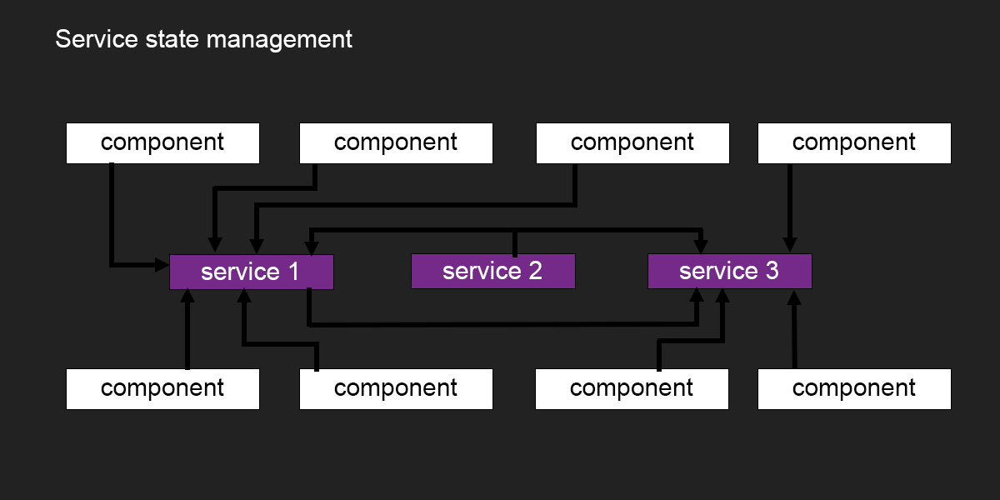

{
type: 'INCREMENT',
value: 1
}Angular & Ngrx
State Management in Angular
State management by Services vs State management by store


History
Ngrx
RxJS powered state management for Angular applications, inspired by Redux
Three fundamental principle
Single source of truth
The state of your whole application is stored in an object tree within a single store.
ONE STORE TO SAVE THEM ALL
ONE STORE TO FIND THEM
ONE STORE TO BRING THEM ALL
State is READ ONLY
The only way to change the state is to emit an action.
Action : an object describing what happened.
Changes are made with pure functions
To specify how the state tree is transformed by actions, you write pure reducers.
(previousState, action) ⇒ newState
(1, INCREMENT) ⇒ 2
Ngrx blocs interactions


Let’s code
Prerequisites and Setup
Prerequisites : angular (2+) application
npm install --save @ngrx/store
Ngrx Ecosystem librairies
@ngrx/store-devtools
Browser extension : Redux DevTools
npm install --save @ngrx/store-devtools
@ngrx/effects
@ngrx/effects provides an API to model event sources as actions
npm install --save @ngrx/effects
Organize your store with Normalizr
Can you see the problem? :(
[{
"id": 1,
"title": "First Article",
"author": {
"id": 1,
"name": "David"
}
}, {
"id": 2,
"title": "Second Article",
"author": {
"id": 1,
"name": "David"
}
}]Is’nt better? :)
{
"articles": [{
"id": 1,
"title": "First Article",
"author": 1
},
{
"id": 2,
"title": "Second Article",
"author": 1
}
],
"authors": [{
"id": 1,
"name": "David"
}]
}Pros
Makes it easier to structure a big application
Gain in performance by Normalizr your store
Awesome debugger extension
Cons
Take a long time to learn
Convince people with Ngrx